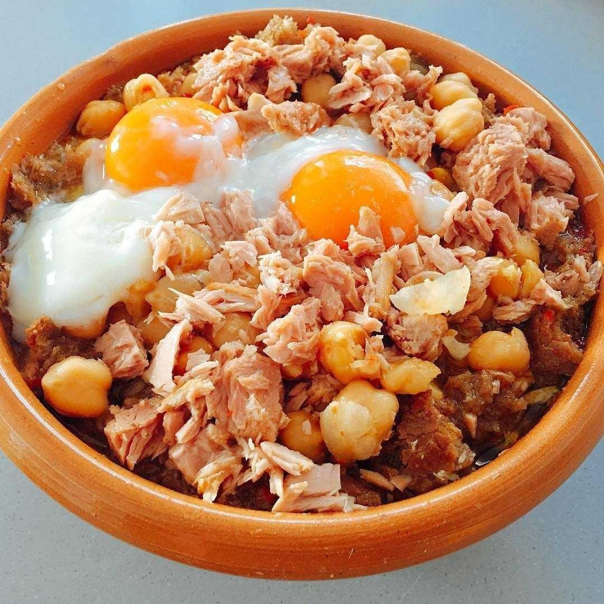

Lablabi

Ingredients:
- 2 cups (1 pound) dried chickpeas, soaked for at least 4 hours or up to overnight
- 8 cups water
- 3-4 large garlic cloves, peeled and halved
- 2 tablespoons olive oil
- 2 cups minced onion (1 large)
- 2 teaspoons ground cumin
- 1 tablespoon minced or crushed garlic
- 1 1/2 teaspoons salt, or more to taste
- 2 tablespoons fresh lemon juice
- Black pepper
Instructions:
- Drain and rinse the soaked chickpeas, then transfer them to a soup pot, large saucepan, or Dutch oven, along with the water and garlic cloves. Bring to a boil, lower the heat to a simmer, partially cover, and cook until the chickpeas are completely tender, an hour or longer. (You want to err on the soft side.)
- Meanwhile, place a medium skillet over medium heat for about a minute, then add the olive oil and swirl to coat the pan. Add the onion and cumin, and cook, stirring, for 5 to 8 minutes, until the onion becomes soft. Add the minced garlic and 1 teaspoon of the salt, reduce the heat to low, and continue to cook for another 10 minutes. Cover and cook over the lowest possible heat for 10 minutes longer, then remove from the heat.
- When the chickpeas are very tender, add the onion-garlic mixture, scraping in as much as you can of whatever adhered to the pan. Collect the remaining parts (this is flavor!) by adding the lemon juice to the skillet and stirring it around, scraping the sides and bottom (deglazing), then pouring all of this onto the chickpeas as well. Taste to adjust the salt (you will likely want to add up to another 1/2 teaspoon) and grind in a generous amount of black pepper to taste. At this point, if you choose, you can puree some of the chickpeas with an immersion blender.
- Cover and let the soup simmer for another 10 minutes or so before serving.
-
Optional Enhancements:
- A few strands of saffron added to the cooking water in step 1
- A spoonful of harissa
- Touches of torn fresh flat-leaf parsley, cilantro, or mint
- Crushed red pepper
- A poached or fried egg added to each serving
- A drizzle of high-quality extra-virgin olive oil (or a citrus-spiked olive oil)
- Cooked diced carrot mixed in
- A sprinkling of capers on top
- Chopped, pitted olives on top—or a bowl of assorted olives on the side
Nutrition Facts Per Serving
- Calories: 353
- Fat: 9g
- Carbs: 54g
- Protein: 16g